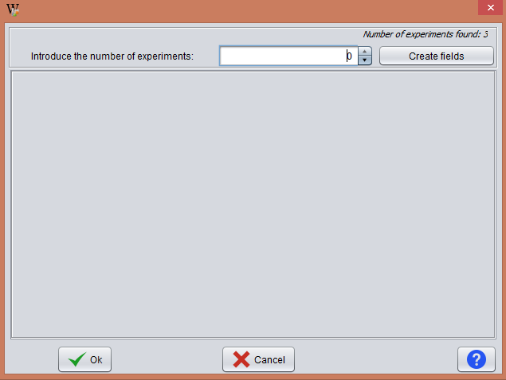
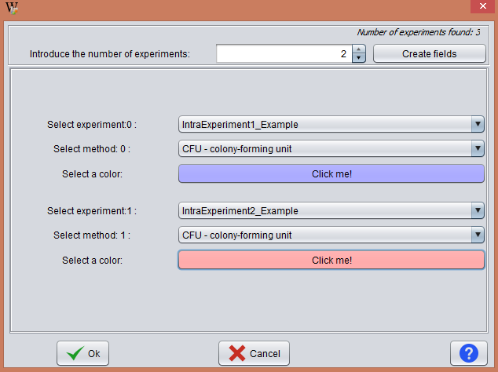
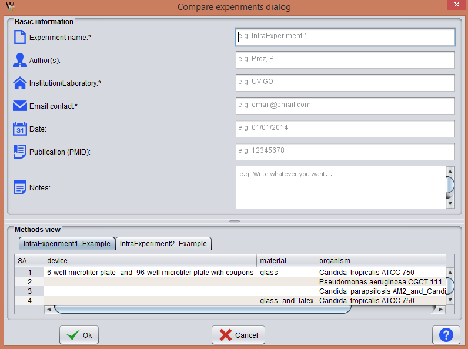
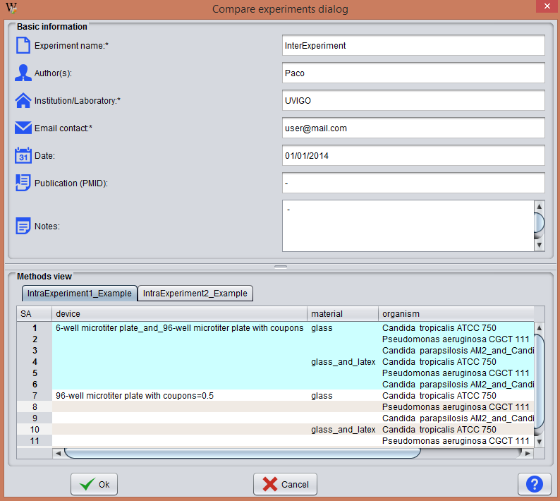

The comparison of results from multiple experiments goes as follows:

To perform a comparison, the selected methods must be identical. Moreover, they must have the same number and type of conditions.

Once the user selects the information he must press the Ok button to proceed with the following dialogue.

This window is divided into 2 areas:
This part of the form has 3 mandatory fields: name of the experiment, organization that is performing the comparison and email of contact.
It displays the data from the selected methods of each Experiment. Here, the user must select rows from each table. The selected rows are marked in cyan.
The following image shows an example with cover information and with several rows of a method selected.
